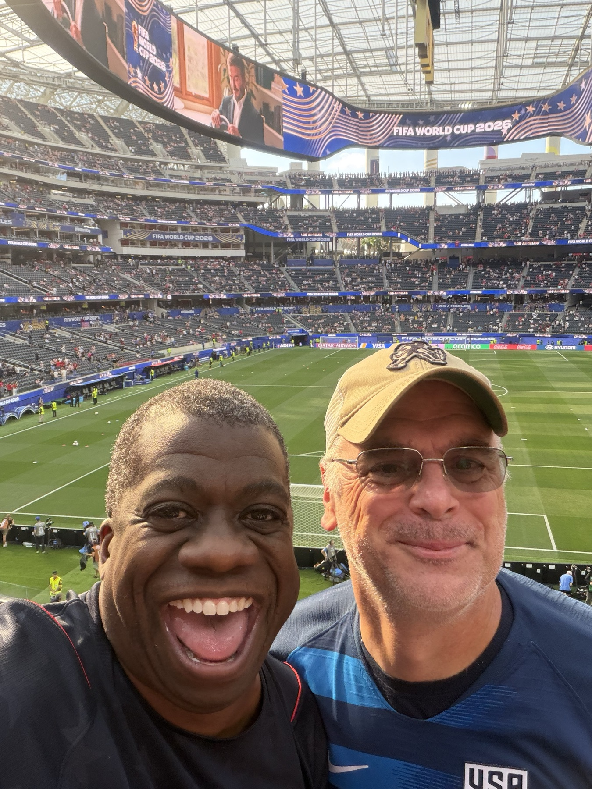
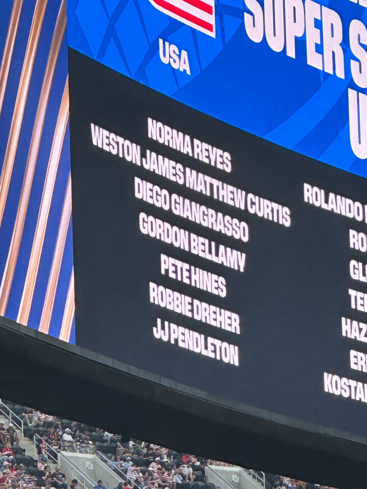

GORDON'S SOCCER STORY · OCTOBER 2026
STILL
OUR
GAME.
A home World Cup. A lifetime of loving this game.
The summer stays with us. The story keeps going.

From the summer archive
01 / THE TEAM NOW
Checked Oct 6, 2026 ↗A new cycle.
Same feeling.
Three wins to start the fall window. Canada next on the published schedule. The team moves forward; the summer still has its own place here.
Results, next dates & what to watch →Source snapshot: October 6, 2026 · Pacific time
Allianz Field · St. Paul, Minnesota
7:00 p.m. Central / 8:00 p.m. Eastern
Where to watch & save kickoff
TNT, truTV, HBO Max, Universo and Peacock, per U.S. Soccer.
Save Canada kickoff ↓Official match preview ↗Schedule checked October 6. This is not a live score feed.
- SEP 26 · FINALUSA 4–1 PERUMatch source ↗
- SEP 29 · FINALUSA 4–2 CHILEMatch source ↗
- OCT 03 · FINALUSA 3–0 MEXICOMatch report ↗
02 / THE SUMMER WE KEEP
JUNE + JULY 2026
The score was
only part
of the story.
“Maybe the World Cup was the friends we made along the way.”Gordon · from the summer archive
03 / MAKE YOUR OWN WAY IN
EXPERIMENT 01 · CHOOSE A ROUTEWhere do you
want to start?
A short route through a big story. Choose what brought you here.
A good first lap: the life, the summer, then a little play.
Why this experiment: a first-time visitor and a friend from the summer need different starting points. Nothing you choose here is tracked or sent.
04 / THE GAME WITHIN THE GAME
You've read it.
Now play it.
Walk through eras of soccer games in The Long Game. Or take the pitch in Belamini ’26.
Enter the arcade ↗